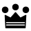

ChessOpener
올드 시실리안
Old Sicilian

1. e4 c5 2. Nf3 Nc6
백의 3번째 수:
3. d4🚫
오픈-
Open-
3. Bb5🚫
로솔리모
Rossolimo
3. Nc3🚫
전환/클로즈드 시실리안: 트래디셔널 라인
Switch/Closed Sicilian: Traditional Line
3. Bc4*🚫
-*
NN*
3. c3🚫
딜레이 알라핀
Delayed Alapin
3. Bd3🚫
코펙 시스템
Kopec System
흑은 퀸사이드 나이트를 전개합니다. 오픈 시실리안으로 진행하면 흑은 여러 선택권을 갖는데:
d5 = 님조 아메리칸(Nimzo-American)
e6 = 전환/타이마노프(Switch/Taimanov)
e5 = 칼라시니코프(Kalashnikov)
g6 = 액셀러레이티드 드래곤(Accelerated Dragon)
Nf6(Nc3) + d6 = 전환/클래시컬(Switch/Classical)
Nf6(Nc3) + e6 = 전환/포 나이트(Switch/Four Knights)
Nf6(Nc3) + e5 = 스베시니코프(Sveshnikov)
Nf6(Nc3) + g6 = 이름 없음
물론 백이 선택하는 안티 시실리안도 있습니다.